7035G10 SIDE OPENING WINDOW (ONE), LEFT OR RIGHT - R.R. INCLUDING CLOSING/OPENING DEVICE
- Path
- Procedures > 70 FITTINGS > 7035 BODYSHELL WINDOWS > 7035G BONNET LID SAFETY OPENING DEVICE > 7035G10 SIDE OPENING WINDOW (ONE), LEFT OR RIGHT - R.R. INCLUDING CLOSING/OPENING DEVICE
- Kind
- repair procedure (removal / refitting; the operation number is the code)
- Applies to
- all engines; all production periods
- Interactive page
- https://sloeber94.github.io/elrnDB-fUlss/en/#/179007776
Applies to: all engines; all production periods
 Removing
Removing
 Refitting
Refitting- Completely lower the sliding side door window until it is in the end of travel position.
- Completely open the sliding side door.
1. Undo the bolt fixing the window opening/closing device to the pillar.
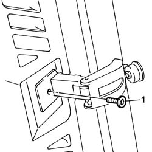
Applies to: all engines; all production periods
1. Undo the bolt fixing the radio aerial connection protective trim.
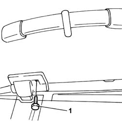
Applies to: all engines; all production periods
1. Remove the side opening window upper support.
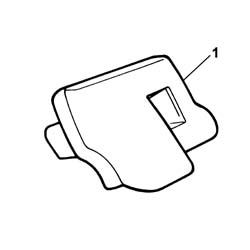
Applies to: all engines; all production periods
1. Disconnect the electrical connection for the radio aerial.
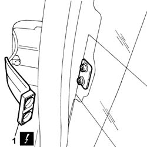
Applies to: all engines; all production periods
1. Release the seal from the side opening window from the housing.
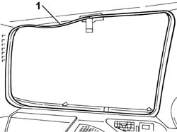
Applies to: all engines; all production periods
1. Remove the radio aerial connection protective trim.
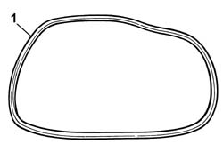
Applies to: all engines; all production periods
1. Working from the outside of the vehicle, fit the wire in the window sealant and bring it out from the inside.
2. Fit the special tool.
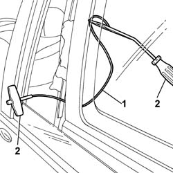
Applies to: all engines; all production periods
1. Remove the side window using the special tool.
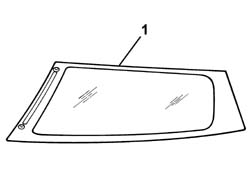
Applies to: all engines; all production periods
1. Working at the bench, undo the bolt fixing the opening/closing device to the window.
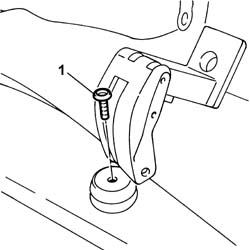
Applies to: all engines; all production periods
1. Working at the bench, undo the bolt fixing the opening/closing device to the window.
Applies to: all engines; all production periods
Refitting
Removing- Fit the window opening/closing device.
- Tighten the bolt fixing the opening/closing device to the window.
- Remove the remaining sealant from the serigraphed area of the glass.
- Clean the serigraphed area of the glass thoroughly.
- Remove the remaining sealant from the housing in the bodyshell for the glass.
- Clean the housing in the bodyshell for the glass thoroughly.
1. Fit the upper (1a) and lower (1b) locating pins for the side opening window in the positions shown on the drawing.
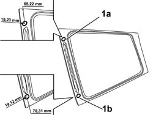
Applies to: all engines; all production periods
- Apply the sealant preparation to the serigraphed area of the side opening window.
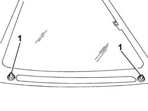
Applies to: all engines; all production periods
1. Apply sealant to the serigraphed area of the side opening window.
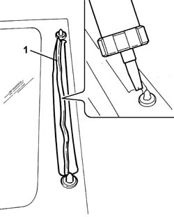
Applies to: all engines; all production periods
- Fit the suction pads to the glass.
- Fit the rearscreen in the tailgate using the suction pads.
- Fit the side opening window seal.
- Tighten the window opening/closing device to the pillar.
1. Fit the special belt to produce more pressure for fitting the side opening window.
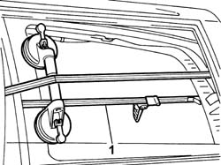
Applies to: all engines; all production periods
- Connect the electrical connection for the aerial.
- Positin the radio aerial connection protective trim and tighten the fixing bolt.
- Close the sliding side door.
- Completely raise the sliding side door window.